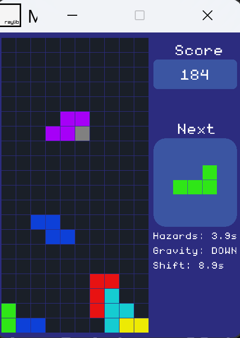

Project Overview
Tetris Reimagined is a complete from-scratch C++ implementation of the classic puzzle game, rebuilt with innovative physics systems and modern architectural patterns. Eschewing existing Tetris libraries, every system—from grid management to collision detection—was engineered from the ground up using the Raylib framework. This project demonstrates high-performance game loop architecture and creative mechanics that challenge traditional spatial reasoning.
Multi-Directional Gravity System
The core innovation of this recreation is the gravity shifter. I implemented a dynamic physics handler that allows the fall-vector to rotate in 90-degree increments mid-game. This required a total overhaul of standard Tetris collision detection; the grid must be re-evaluated from four distinct directions to handle piece locking and line clearing accurately regardless of the current gravity state.
Dynamic Blockade System
To increase tactical depth, I developed a procedural obstacle generation system. These blockades spawn mid-game based on player performance, forcing real-time strategy shifts. The spawn interval dynamically scales with the player's score, creating a smooth difficulty curve that adapts to the user's skill level.

Mechanical Logic: Visualizing the grid re-orientation during a gravity vector shift.

Spatial Reasoning: Procedural blockades spawning mid-game to disrupt traditional stacking patterns.
Technical Architecture & Design Patterns
Modular System Design
The architecture is strictly decoupled into distinct systems for Input, Gravity, Scoring, and Rendering. This modularity ensures that the real-time game loop remains frame-rate independent, utilizing fixed time steps for physics integration to maintain consistent game feel across different hardware.
Advanced Collision & Rotation
I developed an efficient AABB (Axis-Aligned Bounding Box) collision system tailored for a cell-based grid. This includes sophisticated rotation validation and "Wall Kick" mechanics, ensuring that pieces can rotate even when pressed against boundaries or other blocks—a critical component of high-level Tetris gameplay.
Memory & Algorithm Optimization
The system utilizes optimized STL containers for grid data structures and piece allocation. Line clearing and piece rotation algorithms were designed for O(n) efficiency, ensuring zero performance drops even during complex multi-directional gravity transitions.